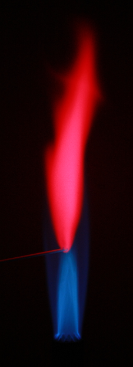
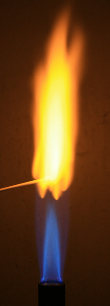
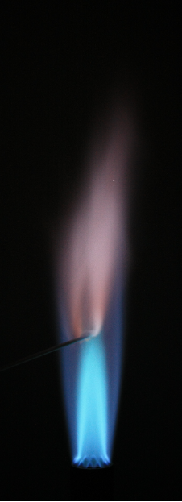
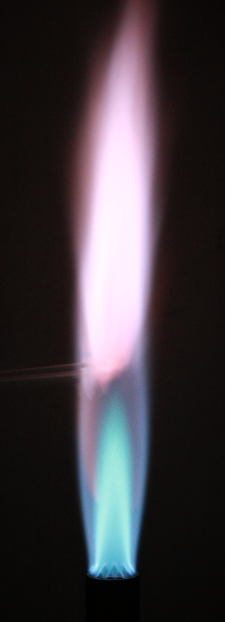
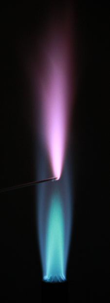
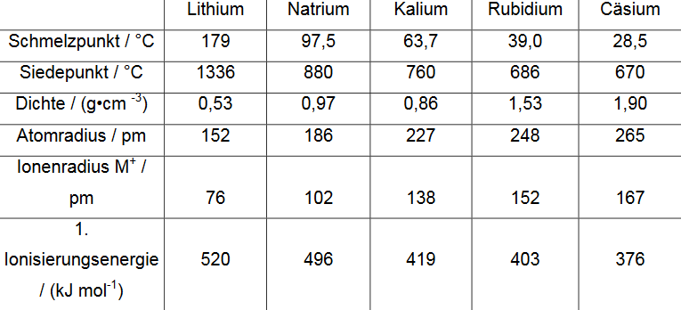

-
P. SchairerLithium (Li) karminrot (671nm)P. SchairerNatrium (Na) gelb (589nm)P. SchairerKalium (K) violett (768 und 404nm)P. SchairerRubidium (Rb) violett (780 und 421nm)P. SchairerCaesium (Cs) violett (458nm)
-
C. Mortimer
-
- Namensgebung, da sie starke basenbildner sind
- weich (können mit Messer geschnitten werden), glänzend, hochreaktiv, niedrige Schmelztemperatur: sinkt mit steigender Periode (Lithium: 181 °C, Caesium: 28 °C)
- Oxidieren wenn Sauerstoff vorhanden ist und liegen dann matt grau/schwarz anstatt gläzend vor
- Aufgrund ihrer hohen Reaktivität kommen sie meistens nur als ionische Verbindungen vor
- Größter Atomradius und niedrigste Ionisierungsenergie in ihrer jeweiligen Periode
- Verlieren ihr Valenzelektron sehr leicht (um Edelgaszustand zu erreichen) → Ladungszustand +1
- Sehr gut wasserlöslich (Aufgrund ihrer Größe haben sie eine geringe Ladungsdichte und lassen sich leicht von ihren Anionen trennen und in polaren Lösungsmitteln [wie Wasser] auflösen)
- Reagieren unter Bildung von Wasserstoff und Hitze sehr stark mit Wasser (stärker mit zunehmender Periode, da aufgrund der zunehmenden Größe die Ionisierungsenergie sinkt)
- Ab der 4. Periode (Kalium) entzündet sich der gebildete Wasserstoff, ab der 5. Periode (Rubidium) kommt es bei Wasserkontakt zu einer Explosion
- 2M(s) + H2O(l) → MOH(aq) + H2(g)
*Wasserstoff gehört nicht zu den Alkalimetallen und ist ein typisches Nichtmetall
Erdkruste
-
- Wasserstoff: 0.14% (bis 1500ppm [hauptsächlich in Wasser und organischen Verbindungen])
- Lithium: 0.006% (keine quelle: https://de.wikipedia.org/wiki/Lithium), 20ppm (angelo.edu...)
- Natrium: 2.75%
- Kalium: 2.58%
- Rubidium: 90ppm
- Caesium: 3ppm (quelle wikipedia)
- Kommt in einigen Mineralien in Lithium-Pegmatiten vor, Lithiumgehalt von bis zu 9% Amblygonit
- Kryolithionit (höchster Lithiumgehalt aller Mineralien), Triphylin, Zinnwaldit